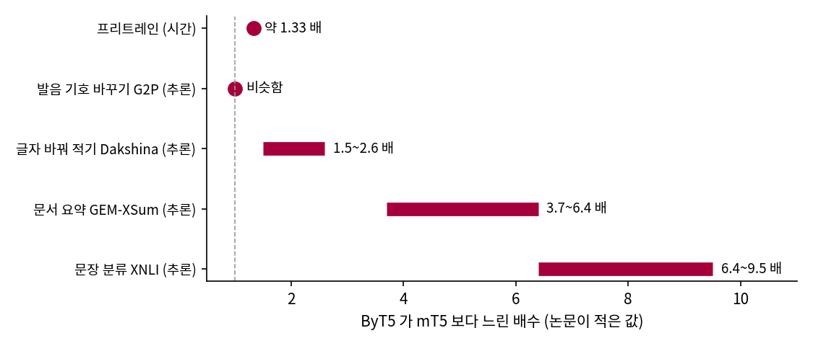
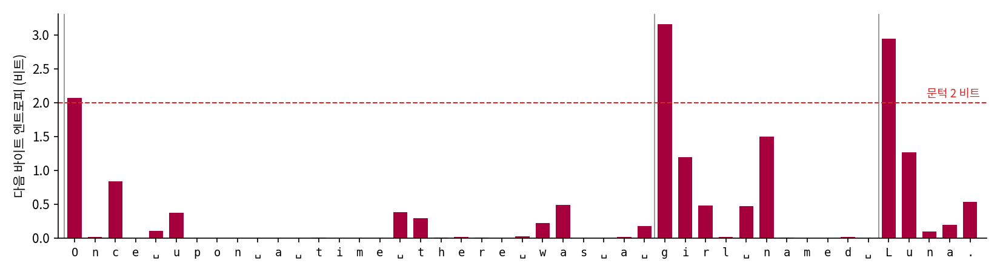
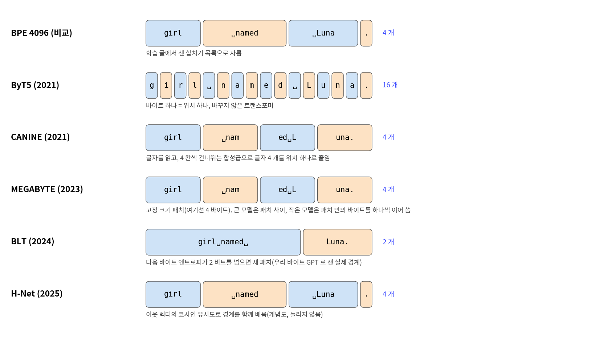
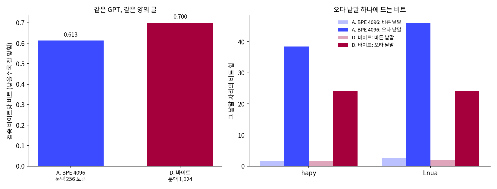

토큰 대신 바이트를 읽으면: 같은 GPT 로 재 보기
토크나이저를 정하던 날 서연이 던진 물음이 남아 있었다. 오타 「Lnua」 하나에 「 Luna」와 번호가 하나도 겹치지 않는 네 조각이 생긴다면, 아예 자르지 말고 바이트를 그대로 읽히면 되지 않을까? 그때 선생님은 앞을 길게 보는 모델을 만든 뒤에 재 보자고 했고, 이제 그 모델이 있다.
역사: 토크나이저 없이 바이트를 읽으려는 시도
바이트 256 개를 그대로 어휘로 쓰면 오타도 숫자도 앞 공백도 모두 같은 규칙으로 들어간다. 이 생각을 막아 온 것은 길이였다. 타이니스토리즈에서 토큰 하나는 평균 3.975 바이트이므로 바이트로 읽으면 같은 이야기가 네 배 길어지고, 어텐션의 계산은 시퀀스 길이의 제곱으로 는다. 이 비용을 줄이려는 모델 다섯이 차례로 나왔다. 모델마다 앞 모델의 무엇을 고치려 했고 그 대가로 무엇을 냈는지를 따라가 보자.
ByT5(2021): 그냥 바이트를 넣어 보자. 구글의 쉐린팅(Linting Xue)와 콜린 래펄(Colin Raffel) 팀은 2021년 5월 공개한 논문 「ByT5: 바이트에서 바이트로 가는 프리트레인 모델로 토큰 없는 미래를 향해」(2022년 TACL 학술지)에서, 번역·요약에 쓰던 T5 모델의 구조를 거의 바꾸지 않고 UTF-8 바이트를 넣었다. 바꾼 것은 입력을 읽는 인코더를 출력을 쓰는 디코더보다 세 배 깊게 한 정도다. 바이트 모델은 같은 크기의 토큰 모델(mT5)과 비슷한 성능을 내면서, 일부러 오타와 노이즈를 섞은 글에 훨씬 강했고, 철자와 발음에 민감한 태스크에서 더 잘했다. 값은 시간이었다. 논문은 프리트레인 시간이 33% 늘고, 추론은 낱말 하나를 바꿔 쓰는 짧은 태스크에서 비슷하거나 1.5~2.6 배, 긴 글을 읽는 태스크에서는 최악 10 배까지 느리다고 적었다.

CANINE(2021): 글자를 읽되 위치를 줄이자. 같은 구글의 조너선 클라크(Jonathan H. Clark) 팀이 낸 CANINE 은 사실 ByT5 보다 두 달 이른 2021년 3월에 공개되었다(TACL 2022). 유니코드 글자를 사전 없이 해시 함수로 벡터에 대응시키고, 이웃 글자만 보는 얕은 트랜스포머를 지난 뒤, 네 칸씩 건너뛰며 거는 합성곱(스트라이드 4)으로 글자 네 개를 위치 하나로 줄여서 깊은 트랜스포머에 넘긴다. 깊은 층이 보는 시퀀스가 토큰 열과 비슷한 길이가 되는 것이다. 다국어 질의응답 벤치마크 TyDi QA 에서 비슷한 크기의 mBERT 보다 F1 이 2.8 높았고 파라미터는 28% 적었다. 다만 CANINE 은 글을 읽고 이해하는 인코더라서, 다음 글자를 이어 쓰는 언어 모델로는 쓰지 않았다.
MEGABYTE(2023): 이어 쓰는 모델도 바이트로. 메타의 위리리(Lili Yu) 팀은 2023년 5월 MEGABYTE 를 냈다. 바이트열을 크기 P 의 고정된 패치로 자르고, 패치 사이의 문맥은 큰 전역 모델이, 패치 안의 바이트 P 개는 작은 지역 모델이 하나씩 이어 쓴다. 큰 모델은 바이트 수의 P 분의 1 길이만 보면 되므로, 논문은 백만 바이트가 넘는 시퀀스까지 다뤘다. 남은 문제는 경계였다. 패치는 낱말과 무관하게 P 바이트마다 잘리므로, 같은 낱말도 글 속 위치에 따라 다르게 잘리고, 예측하기 쉬운 공백에도 어려운 숫자에도 큰 모델이 똑같은 계산을 쓴다.
BLT(2024): 어려운 곳에서 자주 자르자. 메타의 아르티도로 파뇨니(Artidoro Pagnoni) 팀이 2024년 12월에 낸 「바이트 잠재 트랜스포머(Byte Latent Transformer): 패치가 토큰보다 잘 커진다」는 패치 경계를 내용에 맞췄다. 작은 바이트 언어 모델(논문 실험에서 파라미터 1억 개)로 바이트마다 다음 바이트의 엔트로피를 재고, 엔트로피가 문턱을 넘는 곳에서 새 패치를 시작한다. 엔트로피가 크다는 것은 다음 바이트를 맞히기 어렵다는 뜻이다. 낱말 첫 글자처럼 어려운 곳은 패치가 짧고, 낱말 뒷부분처럼 쉬운 곳은 길다. 파라미터 80억 개, 학습 바이트 4조 개까지 계산량을 맞춘 비교에서 Llama 3 의 토큰 모델과 같은 성능을 냈고, 추론 계산을 최대 50% 줄일 수 있었다. 다만 엔트로피를 잴 작은 모델을 따로 학습해야 하고, 문턱은 여전히 사람이 정한다.

H-Net(2025): 경계도 모델이 배우자. 카네기멜런 대학과 카르테시아 AI 의 황석준(Sukjun Hwang), 브랜던 왕(Brandon Wang), 앨버트 구(Albert Gu)는 2025년 7월 「계층적 시퀀스 모델을 끝에서 끝까지 학습하는 동적 청킹」을 냈다. 라우팅 모듈이 이웃한 두 위치의 벡터 사이 코사인 유사도를 재서, 유사도가 낮은 곳(뜻이 바뀌는 곳)에 경계를 둘 확률을 높인다. 경계를 둘지 말지는 0 아니면 1 인 선택이라 그래디언트가 흐르지 않는데, 이 문제는 경계가 불확실한 조각을 앞 조각과 섞어 주는 스무딩 모듈로 풀었다. 이렇게 묶은 조각을 다시 묶는 단계를 여러 겹 쌓을 수 있다. 계산과 데이터를 맞추면 한 단계짜리 바이트 H-Net 이 BPE 토큰을 읽는 트랜스포머를 앞섰고, 두 단계짜리는 두 배 큰 토큰 모델과 비슷했다. 중국어, 코드, DNA 처럼 토크나이저의 규칙이 잘 맞지 않는 데이터에서 앞서는 폭이 더 컸다.

다섯 모델을 이어 보면, 처음에는 경계를 없앴다가(ByT5), 길이를 줄이려고 고정된 경계를 다시 들였고(CANINE, MEGABYTE), 그 경계를 내용에 맞추다가(BLT), 마지막에는 경계 자체를 학습하는 데로 왔다(H-Net). 토크나이저가 미리 하던 일을 모델 안으로 옮기는 과정이다.
바이트를 그대로 읽는 GPT 를 학습해 보기
바이트로 읽으면 무엇을 내주고 무엇을 얻는지는 직접 재 볼 수 있다. 이 장에서 BPE 4096 토큰으로 학습한 작은 GPT(4 층, 헤드 4, 폭 256)를 그대로 두고, 어휘만 바이트 256 개와 이야기 시작 표시 하나, 모두 257 개로 바꾸었다. 바이트 열을 만드는 데는 토크나이저가 필요 없다.
# sources/tokens/byte_vs_bpe.py 에서 발췌
def to_bytes(st):
"""이야기 목록 -> [256, 바이트들..., 256, 바이트들...]. 0xFF 는 UTF-8 에 나오지 않으므로 표시로 쓴다."""
raw = b"\xff" + b"\xff".join(s.encode("utf-8") for s in st)
a = np.frombuffer(raw, dtype=np.uint8).astype(np.uint16)
a[a == 255] = BOS # BOS = 256, 이야기 시작
return a
먼저 길이가 달라진다. 검증 이야기 하나는 BPE 4096 으로 평균 202 토큰인데 바이트로는 평균 800 이다. 문맥 256 에 이야기 한 편이 다 들어가는 비율이 토큰으로는 87.6% 인데, 바이트로는 거의 한 편도 들어가지 않는다. 그래서 문맥을 1,024 바이트로 늘리고(배치 16), 앞의 BPE 모델(A)이 본 것과 같은 양의 글, 약 2억 6천만 바이트를 보도록 16,000 스텝을 학습했다(D).
## 정리 (본 글의 바이트 수는 BPE 토큰 하나 = 3.975 바이트로 계산)
실행 읽는 단위 배치x문맥 스텝 본 토큰(백만) 본 글(백만 바이트) 학습 초 검증 바이트당 비트
A BPE 4096 64 x 256 4,000 65.5 261 47 0.6129
D 바이트 16 x 1024 16,000 262.1 262 134 0.7000
(RTX 4090 한 장. 전체 출력은 sources/tokens/byte_vs_bpe.out.)
같은 양의 글을 보아도 바이트 모델의 바이트당 비트는 0.7000 으로 BPE 모델의 0.6129 에 못 미치고, 학습 시간은 134초로 47초의 세 배쯤 든다. 스텝 수를 A 와 같은 4,000 으로 맞추면 글을 네 분의 일만 보게 되어 0.8456 에 그친다. 이 규모에서는 토큰이 이겼다. 바이트 하나하나를 큰 모델에 넣으면 큰 모델이 바이트 수만큼 계산해야 하므로, MEGABYTE 부터 H-Net 까지가 바이트를 묶어 큰 모델에 넘긴 것이다.
얻는 것은 오타에서 보인다. 같은 문장에서 낱말 하나만 틀리게 쓰고, 두 모델이 그 낱말 자리에 매긴 비트를 쟀다.
| 바른 낱말 → 오타 낱말 | A. BPE 4096 | D. 바이트 |
|---|---|---|
| 「 happy」 → 「 hapy」 | 1.6 → 38.5 비트 | 1.7 → 24.1 비트 |
| 「 Luna」 → 「 Lnua」 | 2.7 → 46.1 비트 | 1.9 → 24.2 비트 |
바른 문장에서는 두 모델이 「 happy」에 1.6 비트와 1.7 비트로 거의 같은 값을 매겼다. 오타 「 hapy」에는 BPE 모델이 38.5 비트, 바이트 모델이 24.1 비트를 매겼고, 서연의 「 Lnua」에는 46.1 비트와 24.2 비트였다. 바이트 모델에게 「hapy」는 「hap」까지 익숙한 바이트에 낯선 「y」 하나가 붙은 것이지만, BPE 모델에게는 「␣ha | p | y」라는 드문 토큰 셋이다. 오타와 노이즈에 강하다는 더 넓은 결과는 여러 태스크에서 노이즈를 섞어 잰 ByT5 논문에 있다.

BLT 의 조각 나누기도 이 바이트 모델로 흉내 낼 수 있다. D 로 바이트마다 다음 바이트의 엔트로피를 재고 2 비트를 넘는 곳에서 조각을 새로 시작하면, 검증 글에서 조각 하나가 평균 7.36 바이트가 된다(sources/tokens/entropy_patches.out).
'Once upon a time there was a girl named Luna.' (45 바이트 -> 조각 3 개)
Once␣upon␣a␣time␣there␣was␣a␣ | girl␣named␣ | Luna.
바이트별 엔트로피: … ␣0.2 g3.2 i1.2 r0.5 l0.0 ␣0.5 n1.5 a0.0 m0.0 e0.0 d0.0 ␣0.0 L2.9 u1.3 n0.1 a0.2 .0.5
동화의 첫 문장 「Once upon a time there was a 」는 너무 익숙해서 조각 하나가 되었고, 무엇이 나올지 모르는 「g」(3.2 비트)와 이름의 첫 글자 「L」(2.9 비트)에서 새 조각이 시작되었다. 「Luna」의 「una」는 「L」을 본 뒤에는 거의 확실하다. 조각의 경계가 모델이 놀라는 자리에 생긴다.
D 가 쓴 동화도 읽을 만했다.
[1] Once upon a time, in a small town, there was a little girl. She was sad and could not get or sleep. She went to her car to be true. She needed to go to sleep with her mom.\nOn the day of her car, the little girl went to the car shop. …

「She went to her car to be true.」 바이트를 하나씩 이어 붙여서 이만큼 쓰네.

철자는 다 맞아. 글자 하나씩 쓰는데도.

철자에 이만큼 강하면 바이트가 더 낫지 않아요?

이 크기에서는 토큰이 이겨요. BLT 는 파라미터 80억, 학습 바이트 4조까지 계산량을 맞추면 Llama 3 와 같은 성능을 냈다고 보고했어요.
그럼 루나는 그대로 4,096 토큰이다. 같은 글을 보는 데 세 배 오래 돌릴 것도 없고.
문제 6. 오타 하나의 값
같은 문장에서 낱말 하나를 틀리게 썼을 때 그 낱말 자리의 비트가 이렇게 바뀌었다(
sources/tokens/byte_vs_bpe.out). BPE 모델(A): 「 hapy」 1.6 → 38.5, 「 hapyp」 1.6 → 55.4, 「 Lnua」 2.7 → 46.1. 바이트 모델(D): 「 hapy」 1.7 → 24.1, 「 hapyp」 1.7 → 48.6, 「 Lnua」 1.9 → 24.2. 오타 때문에 늘어난 비트는 어느 모델이 더 큰가? 왜 그럴까?
늘어난 양부터 빼 보면, 「 hapy」는 A 가 36.9, D 가 22.4 비트, 「 Lnua」는 A 가 43.4, D 가 22.3 비트야. 「 hapyp」도 53.8 대 46.9 고. 세 번 다 BPE 쪽이 더 늘었어.
BPE 모델은 「 happy」를 토큰 하나(375)로만 봤잖아. 「 hapy」가 오면 「␣ha」 다음에 「p」, 그다음 「y」라는, 낱말 안에서 거의 본 적 없는 토큰 셋을 맞혀야 해. 하나하나가 다 놀라운 거지.

바이트 모델은 「 hapy」의 어느 바이트에서 놀랐을까요?

「h」, 「a」, 「p」까지는 「happy」를 쓸 때와 같으니까 익숙했을 거예요. 둘째 「p」가 올 자리에 「y」가 온 데서만 크게 놀랐겠죠. 놀라움이 바뀐 바이트에만 몰려요. BPE 는 오타 하나 때문에 낱말 전체가 낯선 토큰열이 되고요.

그럼 오타 뒤의 글도 바이트 모델이 더 잘 읽겠네요.

오타 뒤까지 낫다고는 이 크기에서 말할 수 없어요. 우리 숫자로 말할 수 있는 곳은 오타 낱말 자리까지예요. 바이트 모델이 노이즈에 강하다는 ByT5 논문의 결과는 여러 태스크에서 노이즈를 섞어 잰 것이고요.